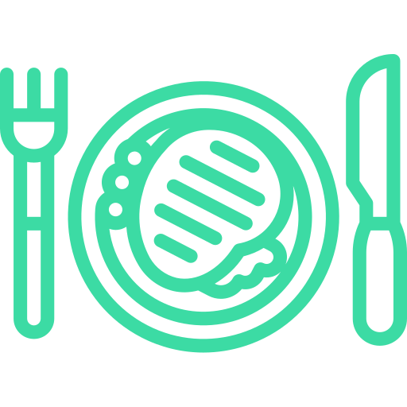

<ion-header>
  <ion-toolbar>
    <ion-buttons slot="start">
      <ion-back-button class="back" defaultHref="tabs/repas" [text]="'Retour'" [color]="'#3CDBA4'"></ion-back-button>
    </ion-buttons>
    <ion-row>
      <ion-col col-5></ion-col>
      <ion-title>
        <ion-col col-2> </ion-col>
      </ion-title>
      <ion-col col-5></ion-col>
    </ion-row>
  </ion-toolbar>
</ion-header>

<ion-content padding color="lightgray">
  <h1>Idées déjeuner</h1>

  <ion-card class="recette1-card" *ngFor="let midi of midiList | async">
    <ion-card-content>
      <ion-card-subtitle></ion-card-subtitle>
      <ion-card-title>{{midi.repas}}</ion-card-title>
    </ion-card-content>

  </ion-card>
</ion-content>
